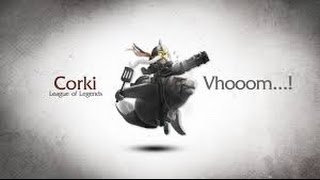
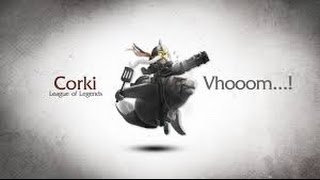

Illaoi
La sacerdotisa del kraken
Personajes Gratis
La sacerdotisa del kraken
Personajes Gratis
Noticias Recientes
 Poppy rework:
Poppy rework:Por fin llega el esperado rework de la pequeña Yordle con el martillo más grande de todo Runaterra
Conflicto OGN vs RIOT:
Lío en Corea entre Riot, OGN, Kespa y SpoTV por los derechos de emisión de la LCK
Marin, Easyhoon y Tom se marchan de SKT:
Marin, Easyhoon y Tom dejan el equipo campeón del mundial para buscar nuevos retos. Los rumores comienzan.
Ultimos Videos
 jinx-vayne-tristana montage

ranked corki mid pre s6
partida con jax y su build de guinsoo en la jungla s6
jinx-vayne-tristana montage

ranked corki mid pre s6
partida con jax y su build de guinsoo en la jungla s6